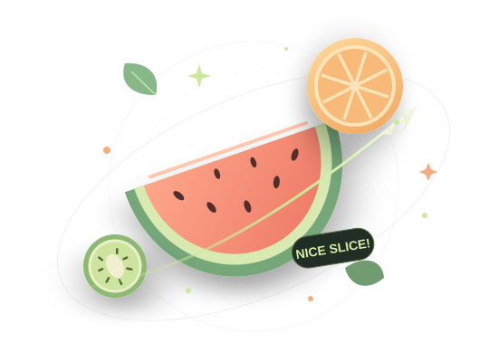

疯狂切水果FRUIT FLASH
A LITTLE MOVEMENT. A LOT OF JOY.
挥一挥手，
快乐开切。
让手掌变成刀锋。
轻松挥动，接住每一个畅快瞬间。
无需手柄，伸手就能玩 · 也支持鼠标
A LITTLE MOVEMENT. A LOT OF JOY.
让手掌变成刀锋。
轻松挥动，接住每一个畅快瞬间。

01 / PLAY WITH YOUR HANDSMAKE IT YOURS
选择控制方式，让刀锋更懂你的动作。
正在连接手势服务…
把舒适的挥手范围映射到整个屏幕。
正在读取追踪位置…
追踪位置决定刀锋跟随哪里：掌心跟随整只手，食指 / 中指分别跟随对应指尖。预览光圈标出当前控制点；其他识别设置需点击下方应用。
有画面但识别困难时提高灵敏度；出现误识别时调回标准。应用灵敏度后会短暂重载模型。
等待数据…
最近 180 次采样的 P50 / P95，不包含摄像头曝光和显示器延迟。
THAT WAS A FRESH ROUND.
THE FRESH RECORDS
本机排行榜 · 记录每一次超越